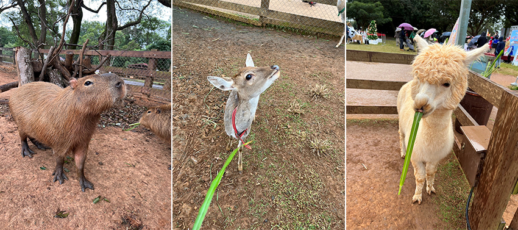
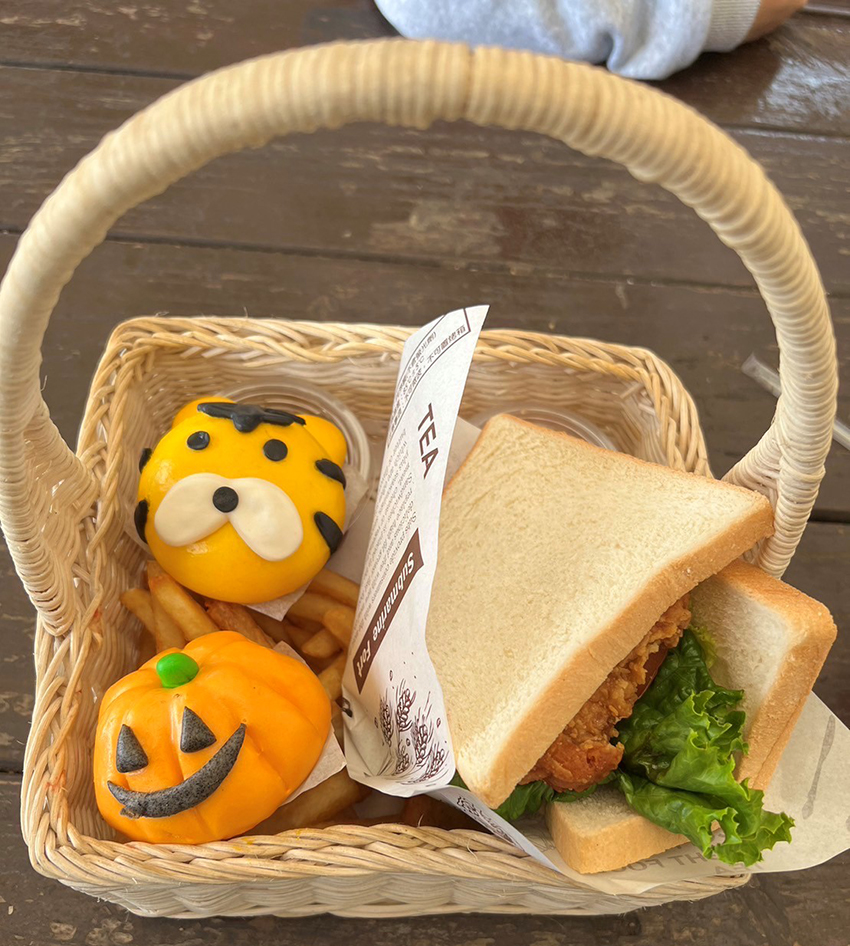
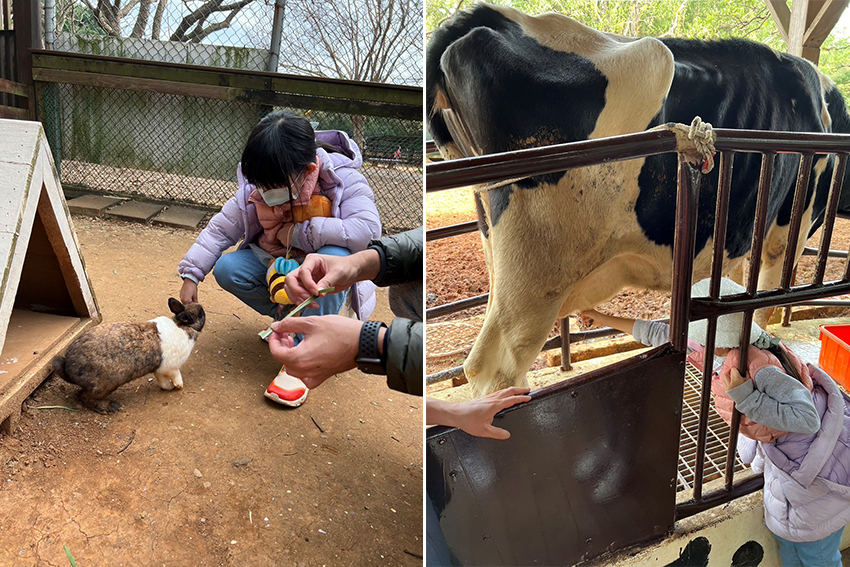
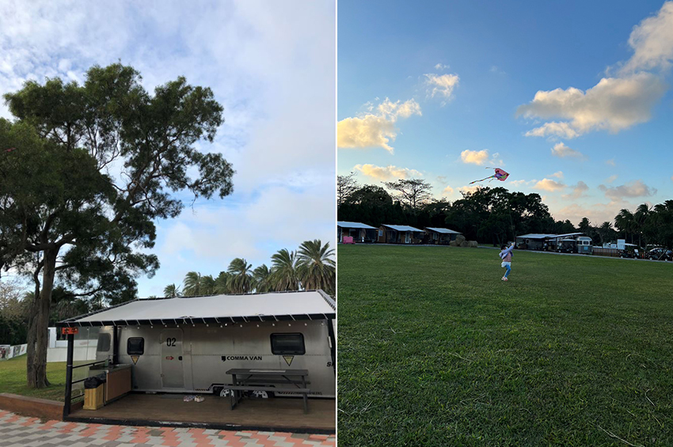
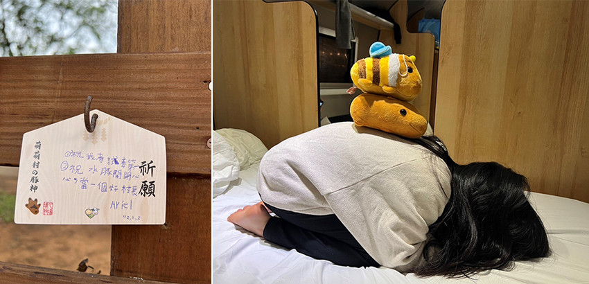

不同於西洋文化，我們的星期一不是Monday，是言簡意賅的一周之初；我們的一月不是January，是名符其實的一年之初。「一」是中華文化最簡潔有力一橫，代表著希望的「啟程」。
2023年的啟程，選擇了女兒的圓夢之旅。圓的是小學女兒與水豚近距離接觸互動的夢想，也圓的是她野外露營的憧憬。二天一夜的楊梅埔心牧場逍遙遊在希望藍海中快樂啟航，夜宿於牧場內牛仔星村的露營車屋。
一月二日是連假最後一天假日，藍天與白雲相當羞怯，幸運的是蒼狗只是偶而帶著眼淚現身招呼。為了避開前仆後繼的人潮，九點準時入園，迫不及待地第一站就衝向暖暮萌萌村，確保能優雅地跟水豚互動。今日正好舉辦前任村長羊駝與新任村長水豚的交接典禮，定時舉行各式各樣特別活動，增添不少遊園樂趣。假日入園好處就是能與水豚、梅花鹿和羊駝互動；平日則只有水豚，其他只能在圍欄外餵食牧草。三者之中，還是只有水豚較為親近人，慵懶地散步貼進身邊，不疾不徐地吃著我們餵養的牧草，一臉撒嬌的模樣，真是呆萌極了！於是我與女兒比賽，看誰能先撫摸水豚到牠覺得通體舒暢翻個身四腳朝天，沒想到讓一隻動物翻身躺下也能成為一種競賽的成就感。
|  |
人潮漸多，我們依依不捨地離開暖暮萌萌村，緩步走向動物運動場，觀看動物賽跑比賽，感受賽豬和賽羊的樂趣。先賽豬再賽羊，五隻動物排排站，鳴槍起跑，有些參賽者偷吃步，該上橋沒上橋，該鑽水管沒鑽水管，真是好氣又好笑。獎品是一頂動物造型紙帽，因為只有十頂，我們猜中冠軍但是卻被沒抽到籤，真是運氣不佳啊！
午時一到，咕嚕咕嚕的肚子引領我們繼續漫步到綠茵速食坊，點用期待已久的野餐籃，可惜海報上明明標示是兩顆水豚造型包子，但實際卻是南瓜怪跟老虎。老闆！圖文不符，這樣不行啦！所幸，午餐意外的好吃，算是給我大大的驚喜。我們也另外買了牛奶冰淇淋享用，大人們覺得腥味太重，但女兒卻吃的津津有味，就索性全部留給她吃，哈哈！
|  |
飽餐一頓後便悠閒恣意地在園區閒逛，去划船區踩天鵝船，環湖兩圈賞景；到兔子區餵食嬉戲，兔子十分可愛卻是生性害羞，勉為其難地靠近你身邊吃草，吃完隨即掉頭離去，但是小孩還是看的心花怒放，一副被融化的樣子。接著參加擠牛奶活動，以OK的手勢就能輕鬆擠出牛奶，真是感謝一臉無奈的乳牛大大，辛苦你帶給我們這些遊客一個愉快體驗。
|  |
五點一到，園區關門，回園區內牛仔星村入住。在露營車屋休息片刻後，趁著太陽還沒下班，我們趕緊把握時間帶著飛盤和風箏到草地上盡情奔跑與遊樂，都市小孩投身鄉下大自然的懷抱，沒有高樓大廈阻礙那一望無際的廣闊天空，呼吸不帶一絲廢氣的清新空氣。在這裡可以大口呼吸，彷彿是天地下的蜉蝣，感受到遼闊世界，能容納無限的思維與事物。
|  |
翌日，我們把握時間園區舊地重遊，不捨這一絲一毫的快樂時光。女兒留下繪馬，祝福水豚開開心心，也留下想像自己是水豚，與另兩隻水豚娃娃玩疊羅漢的童趣身影。
|  |